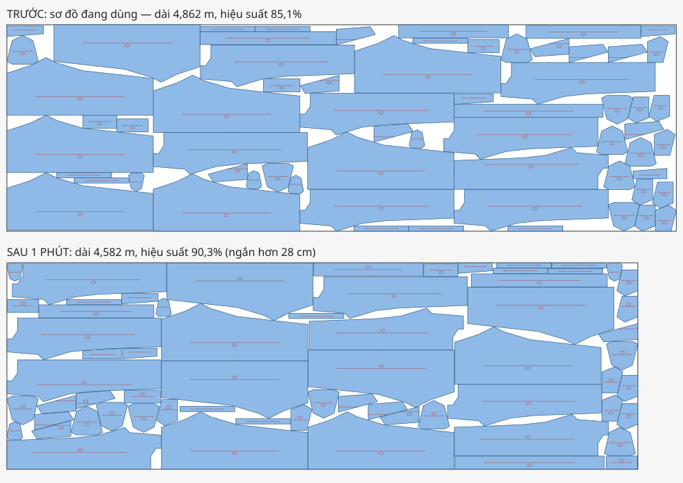

Gửi file sơ đồ PLT xưởng đang dùng. AI xếp lại các chi tiết chặt hơn trong 1–3 phút và trả về file PLT mới, đưa thẳng ra máy vẽ, máy cắt. Nhắn tin hoặc nói bằng tiếng Việt như chat Zalo.
Giác Tiết Kiệm giúp ngay ở những việc hằng ngày của phòng kỹ thuật và kho vải.
✂️Muốn mỗi chồng vải cắt ra tốn ít vải hơn?
Gửi sơ đồ đang dùng, nhận lại sơ đồ ngắn hơn với cùng chi tiết, cùng khổ vải. Không phải đổi rập, đổi máy.
📏Vải về hẹp hơn khổ đã đặt, lo không cắt đủ?
Nhắn khổ thật đo được. Trợ lý giác lại theo khổ mới và báo ngay: vẫn đủ vải, hay thiếu bao nhiêu mét.
🛒Muốn biết chính xác cần đặt bao nhiêu mét vải, tránh mua thừa?
Nhập số lớp cần trải, trợ lý tính số mét vải cho cả chồng theo sơ đồ đã tối ưu, trước khi đặt hàng.
⏱️Không có thời gian, hay không có người ngồi giác lại sơ đồ?
Chỉ cần gửi file và nhắn hoặc nói một câu. 1–5 phút có sơ đồ mới, file PLT đưa thẳng ra máy vẽ, máy cắt.
💸Ngại bỏ tiền mua phần mềm mà chưa biết có hiệu quả không?
Không phải mua gì. Chỉ trả 5% số tiền vải tiết kiệm được; không tiết kiệm thì không mất đồng nào.
Cùng số chi tiết, cùng khổ vải, chỉ xếp lại vị trí. Sơ đồ càng tối ưu, càng tiết kiệm được nhiều vải.
Bộ dữ liệu chuẩn quốc tế ESICUP, công khai, chạy 1 phút. File này có sẵn trong bản dùng thử để ai cũng tự chạy lại được.

Đo trên 10 bộ sơ đồ mẫu chuẩn quốc tế. Hiệu suất sơ đồ là phần vải nằm trong chi tiết: càng cao, vải thừa càng ít. Cùng máy, cùng 2 phút, cùng điều kiện canh sợi (chỉ xoay 0°/180°), mỗi bộ chạy 3 lần: Giác Tiết Kiệm cao hơn ở cả 10 bộ, 30/30 lần chạy.
Vuốt ngang để xem hết bảng →
| Bộ sơ đồ mẫu | Xếp lần lượtcách đơn giản nhất | Cách của Deepnestphần mềm miễn phí | Giác Tiết Kiệm | Sơ đồ ngắn hơnso với Deepnest |
|---|---|---|---|---|
| Quần64 mảnh | 80,1% | 84,9% | 90,8% | −6,5% |
| Áo sơ mi99 mảnh | 75,2% | 79,5% | 88,4% | −10,0% |
| Đồ bơi48 mảnh | 65,2% | 68,6% | 75,9% | −9,6% |
| Albano24 mảnh | 77,9% | 82,7% | 88,3% | −6,4% |
| Dagli30 mảnh | 74,6% | 80,6% | 87,3% | −7,7% |
| Mao20 mảnh | 76,6% | 77,1% | 81,2% | −5,1% |
| Marques24 mảnh | 69,9% | 83,0% | 88,5% | −6,2% |
| Gardeyn 050 mảnh | 77,5% | 81,4% | 88,0% | −7,6% |
| Gardeyn 150 mảnh | 73,8% | 80,0% | 86,3% | −7,3% |
| Gardeyn 3100 mảnh | 75,8% | 78,1% | 85,5% | −8,7% |
| Trung bình 10 bộ | 74,7% | 79,6% | 86,0% | −7,5% |
Quần, áo sơ mi, đồ bơi, Albano, Dagli, Mao, Marques là sơ đồ ngành may trong bộ dữ liệu ESICUP, dùng làm chuẩn so sánh quốc tế; bộ Gardeyn đi kèm mã nguồn sparrow. “Cách của Deepnest” là thuật toán Deepnest và SVGnest dùng (thuật toán di truyền + xếp góc dưới trái), dựng lại trên cùng lõi hình học để so sánh công bằng. Chưa so sánh với phần mềm thương mại như Lectra, Gerber.
Không phải học phần mềm mới. Trợ lý hỏi lại để anh/chị xác nhận trước khi chạy.
Kéo thả file .plt đang dùng. Trợ lý đọc số chi tiết, khổ vải, chiều dài và gợi ý sẵn lệnh phù hợp với chính file đó.
Bấm câu mẫu trợ lý gợi ý sẵn cho file, hoặc tự viết, tự nói theo mẫu. Trợ lý tóm lại thành thẻ yêu cầu để anh/chị kiểm tra rồi bấm Xác nhận.
Xem trước/sau, số mét vải và số tiền tiết kiệm cho cả chồng. File mới giữ nguyên nét vẽ, dấu bấm, chữ của file gốc.
Phí bằng 5% số tiền vải tiết kiệm được, tính trên cả chồng vải. 95% còn lại là của xưởng. Sơ đồ mới không ngắn hơn thì tải về miễn phí, không mất đồng nào.
| Sơ đồ thật 42 mảnh, chạy 2 phút | |
| Vải tiết kiệm (60 lớp × 11,7 cm) | 7,0 m |
| Thành tiền (55.000 đ/m) | 386.200 đ |
| Phí 5% | 19.300 đ |
| Xưởng giữ lại | 366.900 đ |
Không. Hiện tại chỉ cần trình duyệt và file sơ đồ .plt (HPGL) xuất từ phần mềm giác sơ đồ đang dùng. File trả về cùng định dạng, dùng ngay trên máy vẽ, máy cắt hiện có.
Sắp tới trợ lý chạy trực tiếp trong Zalo: gửi file, nhắn tin hoặc gửi tin nhắn thoại ngay trong Zalo là nhận sơ đồ mới. Không cần mở trang web, không cần cài thêm gì, dùng ngay trên điện thoại.
Không sửa hình chi tiết. Chỉ dời và xoay các chi tiết theo góc cho phép, giữ khoảng cách tối thiểu giữa chúng. Nét vẽ, dấu bấm, chữ ghi chú được giữ nguyên từ file gốc. Kết quả được kiểm tra chồng lấn trước khi trả về.
Trợ lý luôn hiện thẻ tóm tắt yêu cầu. Chỗ nào nó chưa chắc sẽ tô vàng để anh/chị sửa. Chỉ khi bấm Xác nhận mới chạy.
File tải lên và kết quả tự xoá sau 1 giờ, không dùng vào việc khác.
Bản dùng thử chạy trên máy chủ riêng của nhóm, có lúc tạm nghỉ. Trang này tự kiểm tra và bật lại nút khi máy chủ mở.
Miễn phí xem kết quả. Chỉ trả phí khi tải sơ đồ ngắn hơn về.